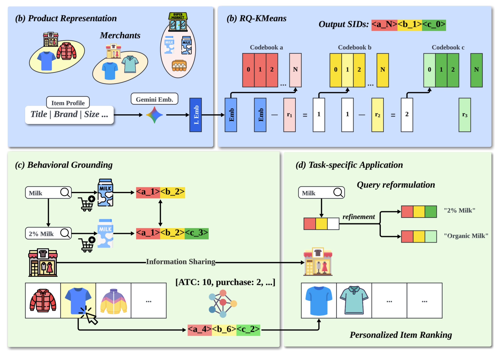
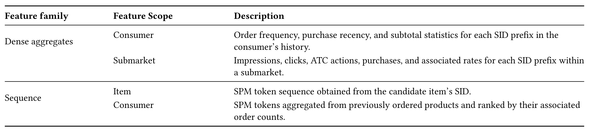
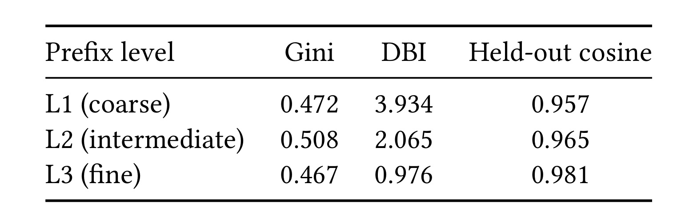
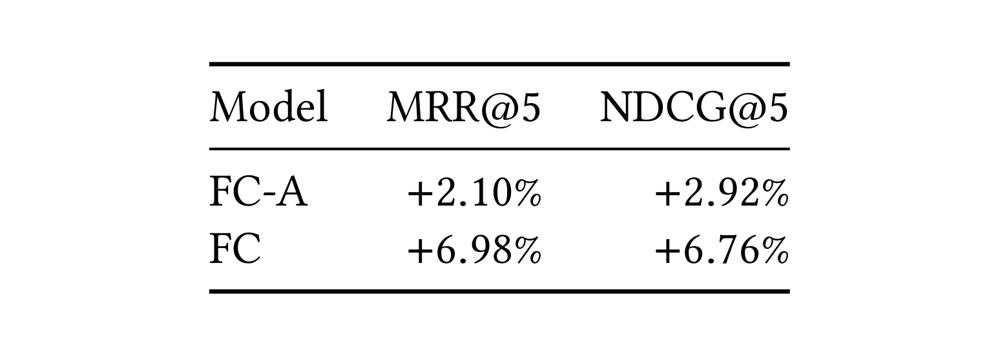
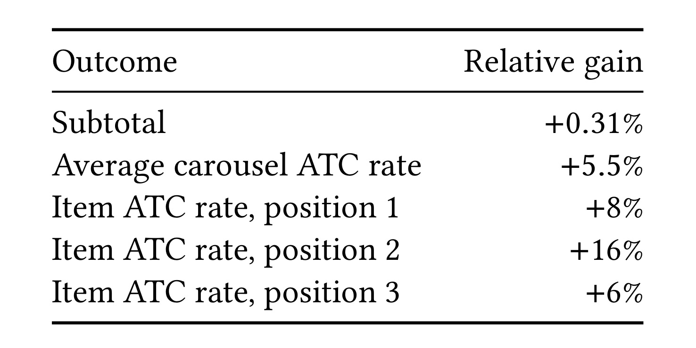
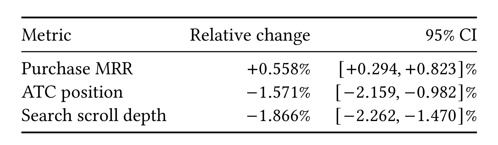
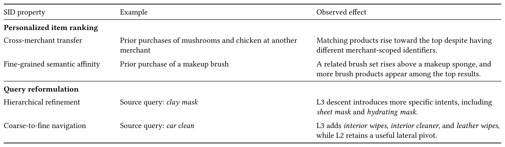
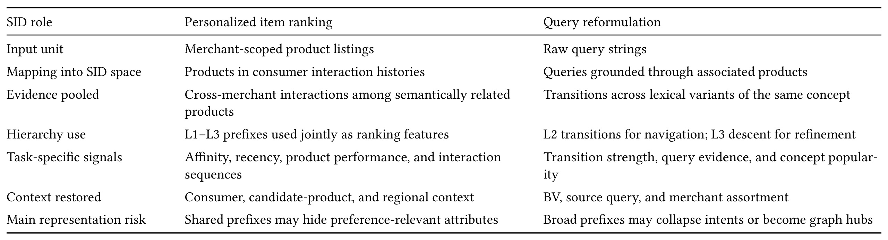

One Hierarchy, Two Systems：用同一套语义商品 ID 支撑发现页排序与搜索页查询改写
这篇论文由 Steven Xu、Sanjyot Thete、Saathvik Dirisala、Raghav Saboo、Nimesh Sinha、Leo Shao、Elyse Winer、Sudeep Das、Martin Wang 和 Kyle MacDonald 合作完成，作者机构均为 DoorDash Inc.，前四位作者标注为共同贡献。论文收录于 First Workshop on Unified Search and Recommendation（USRW 2026），共8页，于2026年8月21日公开。唯一论文入口为 arXiv:2608.20640。本轮未核验到独立代码仓库或项目页，因此复现状态保持“代码未核验”。
多商家电商中，等价或相关商品被不同商家的独立列表 ID 切碎，行为证据无法跨商家汇聚；人工类目又往往粗到无法支撑细粒度发现。搜索侧的原始 query 字符串转移同样会被拼写、缩写和同义表达切碎，还可能在不同业务品类中混淆意图。
1. 背景和问题
1.1 商家列表 ID、人工类目与真实购物意图之间的缝隙
多商家平台里的“商品”同时有多种身份。对履约和库存系统来说，某商家的某个 listing ID 是不可替代的精确标识；但对消费者偏好建模来说，两家门店各自上架的同一款牛奶，或不同品牌但可替代的同类商品，又应该共享一部分证据。如果排序系统只认 listing ID，用户在商家 A 购买美容刷的经验并不会帮助商家 B 的类似商品上排，长期偏好被拆成大量稀疏小样本。
人工类目是另一个极端。它强调可解释的业务组织，能把行为从单个 listing 提升到“饮料”、“美容”等类目上聚合，却容易把消费者真正在意的品牌、规格、口味或功能淹没。论文把问题定义为表示粒度的夹缝：精确 ID 保留身份但不能迁移，类目能迁移但往往不够精细。学习得到的 Semantic ID（SID）层次试图放在两者之间：短前缀表示覆盖面大的概念，长前缀表示更具体的商品意图，同时继续保留 listing ID 处理真实供给。
SID 并非首次出现在推荐系统中。TIGER 把它作为生成式检索的自回归目标，后续工作研究联合生成式搜索推荐，工业排序也曾用 SentencePiece 分解 SID，或把前缀 $n$-gram 参数化成稀疏与序列特征。本文的新意不是一个新量化器，也不是把所有任务都改造成生成式解码，而是把前缀明确定义为可被两条独立产品链路复用的“概念单元”。这个视角把表示学习与业务定义分开：语义词汇从目录内容学一次，但每个应用自己决定在哪个深度聚合什么行为。
1.2 为什么 query reformulation 也需要同一层商品语义空间
搜索页的改写建议通常从会话里相邻 query 的转移来挖。原始字符串图很容易被语言表面形式支配：拼错、缩写和同义词会创造多个其实指向同一商品概念的节点，高频宽泛 query 会吞掉尾部表达，同一个字符串在不同 business vertical（BV）中又可能对应不同意图。更难的是，改写同时需要两种动作：从牛奶到麦片是横向购物任务转移，从牛奶到全脂牛奶则是沿层次向下的细化。单层类目或字符串节点都不自然提供这两种结构。
商品是 query 与可购买供给之间的共同锚点。用户搜索后加购哪些商品，可以用来把 query 定位到 SID 概念；相邻会话行为则可在概念之间建图。这使得论文能以同一个三层语义词汇回答一个更值得研究的问题：“共享表示”是否等于“共享模型”？作者给出的答案是否定的。排序与 query reformulation 不共享参数、训练目标或服务架构，只共享从商品内容学到的语义层次，然后各自补回用户、商家、地区、BV 和原始 query 等任务上下文。这个边界比“搜推一体化模型”更窄，却更接近两条既有工业链路可以分步改造的方式。
这个研究问题还包含一个容易被忽略的双向风险。聚合太少时，统计证据依然稀疏，不能真正完成跨商家迁移；聚合太多时，不同品牌、规格或功能的商品会分享错误证据，query 图中的宽概念也可能变成连接无关行为的 hub。所以论文不能只展示一个下游指标：它需要先证明层次本身随前缀变长而更语义紧凑，再证明排序的证据迁移和改写的意图保留分别受益，最后检查用户行为是否朝更早发现可购买商品的方向变化。这也解释了后文为什么同时保留了内生、离线、在线和定性四类证据。另一个实用背景是商家 assortment 不稳定：一个语义上合理的改写，如果目标商家没有相应商品，就会增加而非减少搜索努力。因此论文从一开始就不把语义相似当作唯一目标，而是要求语义概念最终回到当前可履约供给上。
2. 方法
2.1 共享的三层商品语义层次
方法先把商品 $i$ 的名称、品牌、规格等选定字段串联为文本 profile $t_i$，再用 gemini-embedding-001 编码成3072维向量 $\mathbf x_i$。论文使用三阶段 RQ-$K$-means，即 $L=3$，每个阶段 $K=512$ 个质心，并对每阶段输入做 $L_2$ 归一化。初始残差为 $\mathbf r_{i,0}=\mathbf x_i$，第 $\ell$ 阶段把当前残差分配给最近的代码本质心：
符号解释：$c_{i,\ell}$ 是商品 $i$ 在第 $\ell$ 阶段选中的离散代码，$k$ 枚举该阶段的512个质心，$\boldsymbol\mu_{\ell,k}$ 是代码本 $\mathcal C_\ell$ 中第 $k$ 个质心，$\mathbf r_{i,\ell}$ 是进入当前阶段的归一化残差。平方 $L_2$ 距离决定当前最接近的语义中心；这一步只保留中心索引，为后续跨 listing 聚合提供离散键。
符号解释：$\mathbf r_{i,\ell+1}$ 是扣除已选质心后交给下一阶段的残差，$\boldsymbol\mu_{\ell,c_{i,\ell}}$ 是刚才命中的质心。第一个代码先解释向量的主要方向，后续代码继续量化尚未解释的部分；因而共享短前缀的商品属于宽泛概念，共享更长前缀的商品通常在语义上更相近。
符号解释：$\mathbf s_i$ 是完整三码 SID，$\mathbf s_i^{(\ell)}$ 是深度 $\ell$ 的前缀，分别对应 L1、L2 和 L3。前缀使商品目录形成嵌套分区，同一个完整 SID 既可以在粗粒度上分享统计强度，也可以在深层前缀上保留具体性。核心设计不是让两个系统分享模型，而是让它们对“哪些商品可以共享证据”拥有同一套多粒度语义词汇。

Figure 1 的上半部分先把不同商家的商品 profile 送入 Gemini embedding，再通过三组代码本逐步量化，得到形如 <a_N><b_1><c_0> 的层次 SID。下半部分展示“共享表示、分开行动”：query 通过加购商品定位到前缀，同一 query 的更精细意图可沿 L3 细化；排序侧则把跨商家互动聚合到候选商品与消费者历史共享的前缀上。图中信息共享箭头不表示两个应用广播互动数据，而是它们共同使用目录内容学到的 SID 词汇。这个区分直接限定了结论的可外推范围：论文证明了共享中间表示可用，没有证明联合训练或统一服务架构更好。此外，图里的商家商品和搜索案例只是机制示意，不是实验样本量或类别覆盖的披露；读图时应关注输入、聚合键和两个任务出口的信息流，不应把示例图标当作真实类目分布。
2.2 发现页排序：前缀聚合与 SPM 序列特征
排序支路接入既有的多任务、多标签神经网络，原模型同时学习 CTR、ATCR 和 CVR 头。新增特征分成两类。第一类是前缀键密集聚合：对 L1-L3 分别统计用户层的下单频率、购买新近度和 subtotal，以及子市场层的 impression、click、ATC、purchase 及对应率，并在适用时使用多个回看窗口。这些显式统计不需要模型从头为每个高基数概念学习所有信号，浅前缀提供覆盖，深前缀提供精度。前缀被映射成确定性整数键：
符号解释：$p_i(n)$ 是商品 $i$ 的 $n$ 级前缀在排序特征存储中的整数标识，$j$ 是前缀内代码位置，$c_{i,j}$ 是该位离散码，$K^j$ 提供位值，$+1$ 和最后的 $-1$ 使编码区间与空值处理可确定对齐。L1、L2、L3 放在不同字段，因此作者声称映射在每个前缀层级内无冲突；它不是用哈希概率换取内存的近似。
第二类是SID 序列特征。作者先把每个（位置，代码）映射到 $3K=1536$ 个互不相同的符号，再在按 impression 加权的三符号序列语料上训练 SentencePiece。Unigram LM 学到的子串大量重合于已有 SID 前缀，所以最终采用 BPE，把跨一至三个相邻位置的子序列称为 SPM token。候选商品由自身 token 表示；用户侧收集前180天下单商品，展开 token 后按订单频次排序，同频时用新近度破同，保留高排 token 作为紧凑的长期语义偏好。两侧共享一张 $(N+1)\times64$ 的可训练 embedding 表，$N=2\times10^5$，额外一项为 null token：
符号解释：$T$ 是候选商品或用户历史的 SPM token 列表，$|T|$ 是 token 数，$\mathbf E_t\in\mathbb R^{64}$ 是 token $t$ 的可训练向量，$\mathbf h(T)$ 是均值池化后输入排序网络的表示。空输入除了 null token 还有单独 mask，防止“无历史”被当成一个普通偏好。训练时这些向量与排序目标联合学习；推理时它们把候选商品子词与用户历史子词在同一向量空间中直接对齐。

Table 2 把上述方法拆成可对照的四个信号范围。Dense aggregates 中，Consumer 行保留个人订单频率、新近度和 subtotal，Submarket 行补充地域条件下的曝光、点击、加购、购买及比率；Sequence 中，Item 行是候选商品的 SPM 序列，Consumer 行是历史下单商品的高频 token。表的价值在于它明确了 SID 不是一个单独 embedding feature：它一路作为统计聚合键，另一路作为可学习序列单元。两路的互补性也解释了为什么作者放弃与前缀过度重合的 Unigram LM，选择了能产生非前缀相邻子序列的 BPE。从输入输出看，密集聚合的输出是可直接进模型的统计数值，序列路的输出则是需要与排序目标共同学习的向量。如果离线消融只能删除全部 SID 特征，就无法从表中判断哪一路贡献更大，这是当前实验设计留下的细化空间。
2.3 搜索页改写：概念定位、横向转移与层次细化
搜索支路先做 query-to-concept grounding。对每个 query-BV 组合，系统按 SID 前缀聚合关联加购事件；当事件数至少为5且某 L2 前缀占据至少30%证据时，就把它设为主概念；否则在 L1 以同样门槛重试。两层都不满足时，保留原始 query 节点走受控的碎片化路径，而不强行指派缺乏证据的概念。以 BV 为条件很重要，因为它允许相同字符串在杂货、便利店或零售等业务场景中落到不同商品概念。
横向导航使用会话中连续 query $(q_t,q_{t+1})$，把字符串对替换成它们所属 SID 前缀之间的转移。转移计数与边缘分布在每个 BV 内单独估计，候选边用 NPMI 排序；作者只保留观测计数至少5、独立假设下期望计数至少1、NPMI 至少0.1的边。论文没有把 NPMI 的闭式定义写成展示公式，所以这里保留原文的评分名称与三个门槛，不补写未出现的数学形式。这条路径能合并同义和拼写变体，又避免一条偶然会话转移变成建议。
仅有横向图还不够。两个更细 query 如果都落在同一 L2 概念，它们的转移会折叠为自环并被丢掉。因此系统并行增加从 L2 向 L3 子节点下钻的细化路径：有 query 专属加购证据时按该证据排 L3，否则回退到父概念的流行度。SID 本身是内部代码，候选概念最后由语言模型结合代表商品渲染成简短面向消费者的 query，第二遍删除不可用的源-目标对，再按源 query 与渲染 query 的 embedding 相似度排序。生成模型只负责把已有概念语言化，候选结构仍由行为图和商品层次决定；如果把它误读为开放式 LLM 重写，就会夸大生成模型的作用。服务时还要用商家当前有效 assortment 过滤，目标概念至少含一个可用商品才能展示，避免建议一个无法履约的意图。
3. 实验结果
3.1 共享层次本身是否成立
首先要验证的不是下游指标，而是 SID 前缀是否真的伴随深度呈现更细语义。作者使用三个内生指标：Gini 衡量不同前缀组的商品使用是否不均衡，越低表示代码使用越平衡；Davies-Bouldin Index（DBI）比较组内离散和组间分离，越低表示簇更紧凑、相互更易区分；held-out cosine 测未见商品与同前缀训练商品的平均余弦相似度，越高表示对新商品的语义一致性越强。

Table 1 显示，从 L1 到 L3，DBI 从3.934降到0.976，held-out cosine 从0.957升到0.981，这两个趋势与“长前缀更精细”的解释一致。但 Gini 并非单调：L1 为0.472，L2 升到0.508，L3 又降到0.467。因此表格支持的是“随深度提高簇分离度与语义一致性，同时代码不均衡程度大体可比”，不是“所有质量指标都随层级严格改善”。另外，这些是目录组结构指标，它们不直接证明排序或搜索体验会提升，只是为下游实验建立必要前提。表中还没有与其他量化方法、不同向量编码器或人工类目直接比较这三项内生指标，所以它更适合证明“本 SID 的层级趋势存在”，而不是证明当前 RQ-$K$-means 配置在所有替代方案中最优。
3.2 发现页排序：离线消融与在线组合实验
排序离线评估用前 $M$ 天日志训练，在第 $M+1$ 天评估 CVR 头。完整候选 FC 同时包含 SID 特征和并行开发的非 SID 更新，所以直接对生产基线不能隔离 SID 作用。作者为此构造 FC-A：保持完整的非 SID 特征配置，只删除所有 SID 派生特征。评估使用至少有一次转化的 session，指标是 $K\in\{3,5,10\}$ 下的 MRR@$K$ 和 NDCG@$K$；表中给出 $K=5$，因为被评估发现页无需滚动可见五个商品。

Table 3 中的数值都是相对生产基线的增益，不是指标绝对值。FC-A 的 MRR@5 和 NDCG@5 分别提升2.10%和2.92%，说明并行的非 SID 改动已经带来收益；恢复 SID 特征后，FC 的对应相对增益为6.98%和6.76%。因为两个候选只差 SID 特征，FC 相对 FC-A 的额外差异是这篇论文在排序端最干净的证据。但它仍仅限于特定发现页的离线相关性，而且样本只保留有转化 session，这个条件会影响指标分布与普通浏览流量的可比性。论文说明 $K=3$ 和 $K=10$ 下存在相同趋势，却没有在表中披露完整数值；因此可以说排序优势不只出现在五个位置，但不应为未披露的截断深度补出任何增益。表中也没有标准误、置信区间或多次随机训练方差，所以它支持的是单次披露设置下的对照差异，而不是稳定性与统计显著性的完整证明。

Table 4 来自21天消费者随机实验，用户大致均匀分到现有 ranker、功能包 treatment，以及在同一 treatment 上再加服务优化的三个实验臂；论文只比较前两者。表中以相对变化报告 subtotal、平均 carousel ATC 及头三个位置的 item ATC，披露方向在这些行上均为改善。正文还报告了首位商品历史流行度和头部商品首位曝光占比向下，作者把它解读为在不损害交互的同时扩大了较不流行商品的曝光。不过，线上实验测的是含 SID 与非 SID 并行更新的功能包，不能把整个线上方向性改善全部归因于 SID；论文也未披露绝对流量、目录规模或全平台覆盖范围，因而这里仅按原文的匿名相对口径解读方向，不外推成 DoorDash 全站结论。
3.3 搜索页改写：意图保留、建议质量与搜索效率
搜索支路的离线实验回答两个问题。第一，SID 是否比人工类目更能保留细粒度意图？当不同意图 query 映射到同一概念时，它们的转移会变成自环，无法产生改写候选。人工类目会折叠18.8%的意图变化转移，SID 为10.9%，说明后者在保留候选生成信号上更精细。第二，概念转移图是否比原始 query-string 图产生更好的建议？LLM judge 从 usefulness、target-text quality 和 distinctiveness 三方面打 bad/acceptable/good，映射为0、0.5、1。在200对人工标注 query 上，judge 精确一致率为78%，usefulness 一致率为80%；在两个系统都能服务的 query 上，rank-one 评审质量由字符串图的0.522升到 SID 系统的0.734。这里的“质量”是 judge 定义下的离线分数，不是用户转化率。

Table 5 比较完整 SID 改写模块与不展示改写建议的对照组，采用消费者随机化。论文以相对口径报告 purchase MRR 向上，ATC 位置和 search scroll depth 向下；后两个指标越低越好，因此三者的共同含义是用户更早到达可购买商品，需要的搜索滚动更少。原表同时给出95% CI 列，三行区间均位于各自改善方向；由于论文不披露绝对样本量、流量占比或商家覆盖，这里不进一步推演统计效能，也不将结论泛化到所有搜索页。该实验评估的是从概念挖掘、LLM 渲染到 assortment 过滤的完整模块，所以它也不能单独判断横向 NPMI 边、L3 下钻或语言渲染各自的贡献。从指标链条看，purchase MRR 对应购买商品出现得更早，ATC position 对应首次加购位置，scroll depth 对应浏览成本；三项同向比只有一项点击指标更能支撑“更早找到可买商品”的解释，但仍不等于已解释长期购物满意度。
3.4 定性案例与跨系统证据边界
定量结果之外，附录给出了四个可读案例，帮助区分“跨商家迁移”和“层次细化”。它们不是额外大样本实验，但能检查系统行为是否与方法设计一致，并暴露哪些属性会在压缩中丢失。

Table 6 的排序案例中，用户在另一商家购买蘑菇和鸡肉后，当前商家的对应商品虽然 listing ID 不同，仍能向前移动，这正是前缀聚合想获得的跨商家证据。美容刷案例更细：相关刷组超过美妆海绵，且前列出现更多刷类商品，表明模型不只学到宽泛“美容”类目。改写案例中，clay mask 的 L3 下钻产生 sheet mask 和 hydrating mask 等更具体意图；car clean 的 L3 提供内饰清洁相关细化，L2 仍保留横向转移。这些案例支持机制一致性，但不能作为覆盖长尾错误率的统计估计。它们也提醒我们，“更具体”并不总等于“更符合当前任务”：例如 clay mask 到其他 mask 的细化是否保留了材质约束，仍需要人工或更精细证据判断。表格只展示成功示例，没有展示失败案例比例，所以它应被当成可解释性补充，不是安全性保证。

Table 7 把“一个层次，两个系统”拆成七行对照。排序的输入单元是商家范围 listing，通过用户互动历史进入 SID 空间，聚合跨商家的相关商品证据，L1-L3 联合作为特征，再补回用户、候选商品和区域上下文。改写的输入单元是原始 query，通过关联商品定位概念，聚合词汇变体的转移证据，用 L2 做导航、L3 做细化，最后补回 BV、源 query 和商家 assortment。表格最后一行尤其重要：排序侧的共享前缀可能隐藏个人在意的属性，改写侧的宽前缀则可能折叠意图或成为高度图 hub。因此 SID 是可迁移语义先验，不是完整任务状态；两个系统之所以都需要额外上下文，不是工程上的偶然补丁，而是语义压缩必然留下的信息缺口。
4. 总结
4.1 我的判断
这篇工作最有价值的部分，不是又展示了一次 SID 可以进排序模型，而是说清了共享层可以停在“可复用概念键”这个位置。一套从商品内容学到的三层 SID，在排序中是跨 listing 的行为聚合键和序列特征，在改写中是 query 定位、概念转移和层次下钻的图节点。两条链路不需要共享模型参数，仍可以通过同一语义词汇减少证据碎片化。对既有搜索与推荐技术栈而言，这种接口比立即追求联合大模型更容易做消融、度量和回滚。
证据强度需要分层看。共享层次有内生结构指标；排序有 FC 对 FC-A 的离线消融，是归因最清晰的部分；搜索改写有类目折叠率、人工标注校验过的 judge 分数和线上方向性结果。但排序线上数字属于功能包，改写线上结果属于完整模块，都不是每个 SID 子组件的独立因果效果。因此合理结论是：这个共享语义层在两个 DoorDash 指定应用中显示出一致价值，但尚不足以证明它对任意平台、品类或任务都具有同等收益。
4.2 局限与风险
- 线上归因不完全。 排序 treatment 同时包含 SID 和非 SID 更新，而 query reformulation 是从概念挖掘到渲染过滤的整体；离线消融只能部分弥补，不能替代线上因子实验。
- 披露规模有限。 论文是8页 workshop 系统报告，没有公开商品数、互动量、商家覆盖、延迟、计算成本或完整超参，外部团队难以复现生产可扩展性。
- 语义压缩会丢失任务关键属性。 共前缀商品仍可能在品牌、规格或功能上存在用户在意的差异；量化边界两侧的可替代品又可能获得不同码。
- query grounding 并不总是原始意图。 用加购商品定位 query 时，学到的可能是最终购买概念，而不是起始搜索意图；宽前缀还可能成为高度 hub，传播无关建议。
- 评估依赖代理口径。 排序离线样本限定为有转化 session，改写质量依赖 LLM judge；尽管有200对人工标注校验，78%的精确一致率仍表明 judge 不是人工判断的无误差替代。
4.3 后续跟进
- 做线上析因消融。 排序侧至少分开前缀密集聚合、SPM 序列特征与非 SID 更新；改写侧分开 L2 横向边、L3 下钻、LLM 渲染和 assortment 过滤，否则无法决定算力和维护投资应放在哪一环。
- 跟踪层次漂移与冷启动。 商品 profile、新品占比和曝光分布会变，需要监测重训后 SID 变更率、前缀负载、新商品 held-out 一致性，以及码变更对特征回填和图边稳定性的影响。
- 建立属性敏感的错误集。 针对品牌、规格、食物过敏、不同功能版本和多义 query，分析同前缀错聚合与量化边界错分离，这比只看全局 DBI 更能验证业务安全边界。
- 等待可复现资料。 当前未核验到独立代码或项目页，后续应优先查看是否公开 SID 训练配置、SentencePiece 词表细节、query-BV 定位样例和评估集，再判断哪些结论可以跨平台重现。